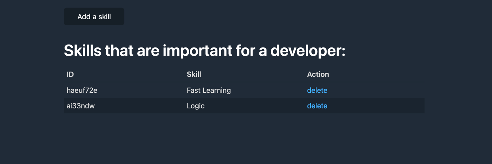
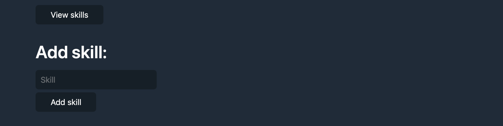

11 Pratimas:
Sukurti front-end puslapį, kuris bendraus su back-end‘u naudojant Fetch ir GET/POST/DELETE informaciją (programuotojų įgūdžius).
Du puslapiai:
- index.html (atvaizduoja visus įgūdžius lentelėje ir leidžia ištrinti juos);
- add.html (įrašo igūdžius).
Darant pratimą, vadovaukitės savo žiniomis ir geriausių praktikų supratimu. Vieno teisingo atsakymo nėra ir minimalios detalės kaip alert žinutės įtakos nedaro – svarbiausias duomenų perdavimas, atvaizdavimas ir taisyklingai parašytas kodas.
Dizainai
Nors stilistika balų nesuteikia, stenkitės atitaikyti dizainą palaikant bendrą tvarką:
index.html:
Paspaudus ant delete – jei gaunamas sėkmingas response – alertina success ir perkrauna puslapį.
add.html:
Įrašius duomenis – jei gaunamas sėkmingas response – alertina success ir nukreipia į index.html.
Abiejuose puslapiuose gavus errorą – jį alertina.
Back-end informacija
BASE_URL = https://melon-potent-period.glitch.me
GET /skills – paduoda visus įgūdžius. POST /skills – tikisi JSON objekto su skill property, kuris stringas su įgūdžiu. DELETE /skill/:id – ištrina įgūdį pagal paduotą id per URL parametrą.